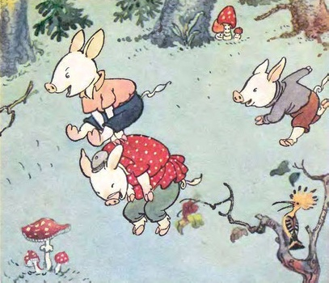
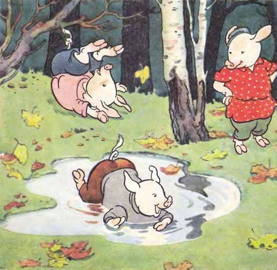
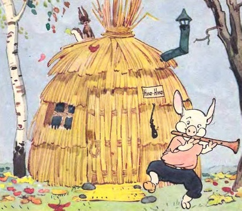

Spider-Man Adventures
Вернуться На главную
Posted on May 15, 2023 at 12:00 PM
Жили-были на свете три поросёнка. Три брата. Все одинакового роста, кругленькие, розовые, с одинаковыми веселыми хвостиками. Даже имена у них были похожи. Звали поросят: Ниф-Ниф, Нуф-Нуф и Наф-Наф. Все лето они кувыркались в зеленой траве, грелись на солнышке, нежились в лужах.
Но вот наступила осень. Солнце уже не так сильно припекало, серые облака тянулись над пожелтевшим лесом. — Пора нам подумать о зиме, — сказал как-то Наф-Наф своим братьям, проснувшись рано утром. — Я весь дрожу от холода. Мы можем простудиться. Давайте построим дом и будем зимовать вместе под одной теплой крышей. Но его братьям не хотелось браться за работу. Гораздо приятнее в последние теплые дни гулять и прыгать по лугу, чем рыть землю и таскать тяжелые камни. — Успеется! До зимы еще далеко. Мы еще погуляем, — сказал Ниф-Ниф и перекувырнулся через голову. — Когда нужно будет, я сам построю себе дом, — сказал Нуф-Нуф и лег в лужу. — Я тоже, — добавил Ниф-Ниф. — Ну, как хотите. Тогда я буду один строить себе дом, — сказал Наф-Наф. — Я не буду вас дожидаться. С каждым днем становилось все холоднее и холоднее. Но Ниф-Ниф и Нуф-Нуф не торопились. Им и думать не хотелось о работе. Они бездельничали с утра до вечера. Они только и делали, что играли в свои поросячьи игры, прыгали и кувыркались.
— Сегодня мы еще погуляем, — говорили они, — а завтра с утра возьмемся за дело. Но и на следующий день они говорили то же самое. И только тогда, когда большая лужа у дороги стала по утрам покрываться тоненькой корочкой льда, ленивые братья взялись наконец за работу. Ленивые поросята
Ниф-Ниф решил, что проще и скорее всего смастерить дом из соломы. Ни с кем не посоветовавшись, он так и сделал. Уже к вечеру его хижина была готова. Ниф-Ниф положил на крышу последнюю соломинку и, очень довольный своим домиком, весело запел: Хоть полсвета обойдешь, Обойдешь, обойдешь, Лучше дома не найдешь, Не найдешь, не найдешь! Напевая эту песенку, он направился к Нуф-Нуфу.
Someone in Gotham

Нуф-Нуф невдалеке тоже строил себе домик. Он старался скорее покончить с этим скучным и неинтересным делом. Сначала, так же как и брат, он хотел построить себе дом из соломы. Но потом решил, что в таком доме зимой будет очень холодно. Дом будет прочнее и теплее, если его построить из веток и тонких прутьев. Так он и сделал. Он вбил в землю колья, переплел их прутьями, на крышу навалил сухих листьев, и к вечеру дом был готов.
Нуф-Нуф с гордостью обошел его несколько раз кругом и запел: У меня хороший дом, Новый дом, прочный дом, Мне не страшен дождь и гром, Дождь и гром, дождь и гром! Не успел он закончить песенку, как из-за куста выбежал Ниф-Ниф. — Ну, вот и твой дом готов! — сказал Ниф-Ниф брату. — Я говорил, что мы быстро справимся с этим делом! Теперь мы свободны и можем делать все, что нам вздумается! — Пойдем к Наф-Нафу и посмотрим, какой он себе выстроил дом! — сказал Нуф-Нуф. — Что-то мы его давно не видели! — Пойдем посмотрим! — согласился Ниф-Ниф.